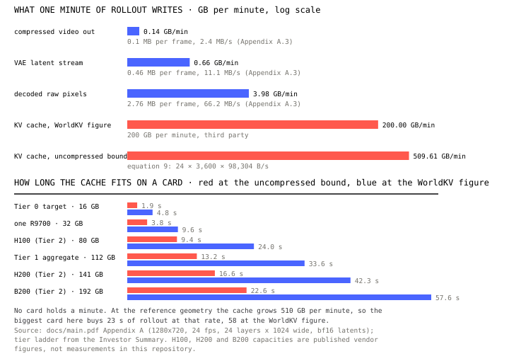

Ask a language model what happens when a knife is pushed off a counter and it will tell you the knife falls. Ask a world model the same question and it has to produce the fall: the slide, the tip, the rotation, the bounce. Robots, simulators, digital twins and automated testing all need the second kind of model. It doesn't come from scaling the first.
Outcome versus process
The language-model playbook is: collect everything, predict the next unit, scale. It worked because text is already compressed. The people who wrote it threw away everything that didn't matter before the model ever saw it.
Video arrives raw. A world model that predicts observations is predicting the uncompressed process, one frame after another, and each frame is conditioned on the actions taken so far. That changes the unit the whole cost model is built on.
The arithmetic of a frame
Start with one raw 1080p frame. It is 1,920 × 1,080 pixels at three bytes each:
1,920 × 1,080 × 3 B = 6,220,800 B ≈ 1.5M tokens' worth of bytes
At roughly four bytes of text per token, a single frame outweighs a million-token context. Run the comparison the other way and a 131,072-token context, which holds a novel for a language model, holds about 0.2 seconds of video.
Attention makes it worse. Generating one frame with a 20-step diffusion model takes roughly 1,250 times as many attention comparisons as generating one token at a 4K context. Every one of those frames is then the input to the next one.
| Quantity | Value | Condition |
|---|
| Bytes in one raw frame, as tokens | ~1.5M | 1080p, 3 bytes per pixel, ~4 bytes per token |
| Video held by a 131,072-token context | ~0.2 s | same frame accounting |
| Attention comparisons, frame vs. token | ~1,250× | 20-step diffusion frame vs. one token at 4K context |
| KV cache for one minute of rollout | >200 GB | 14B model, ~0.73 MB per token (reported by WorldKV) |
| KV cache for a ten-second rollout | ~33 GB | fills a 32 GB device |
| Robot-control latency | 3.6× slower than real time | naive path, 5.7 s per 1.6 s action chunk (reported for DreamZero) |
Working-paper arithmetic and published third-party figures, not our measurements. Each holds only under the condition beside it.
Memory, not FLOPs
The number that decides where world models run is not the compute per frame. It is what the model has to hold while it predicts.
An autoregressive model keeps a key-value cache of everything it has attended to. At about 0.73 MB per token for a 14B-parameter model, one minute of interactive rollout passes 200 GB, more than a single B200 holds. Even a ten-second rollout needs about 33 GB, so one session fills a 32 GB device and batching collapses: you can't amortise the model across users when one user already uses the whole card.

Stream rates from docs/main.pdf Appendix A.3; the cache bounds are the published WorldKV figure and the uncompressed estimate from equation 9. Card capacities are vendor figures, not measurements from this repository, and the fit time divides capacity by growth - it is not a measured run.
Latency follows from the same place. A naive robot-control path built on a video world model has been reported at 5.7 seconds for each 1.6-second action chunk, 3.6 times slower than the world it is meant to keep up with.
What the industry fixes do
There are good engineering fixes: distillation to fewer diffusion steps, reusing work between steps, splitting guidance, quantization. Stacked together they reach roughly 38× on a GB200.
Every one of them shortens or hides the same loop. None changes what the model holds while it predicts, which is where the cost comes from. That's why the default answer to "how do we run a world model?" is still "in a datacenter".
Fidelity is not correctness
Suppose cost weren't a problem. Three properties of how these models are trained mean more compute still wouldn't make them right.
The loss. Pixel and diffusion losses measure distance to one recording. A cup that lands a centimetre to the left is physically correct and still penalised, so the model learns to blur between possible futures instead of committing to one that obeys physics.
The units. Video encoders discard detail inside each 8-pixel cell and each 4-frame stride. Contact and velocity live exactly there. No larger model downstream can recover what the encoder threw away.
The errors. A wrong token is local and recoverable. A drifted pixel feeds the next frame. A ten-second rollout at 24 frames per second is 240 predictions, each built on the last one's mistakes.
A blurry model that gets the physics right beats a sharp model that gets it wrong. The planner consumes the physics.
Compute buys fidelity: sharper frames, longer clips. What a robot, a planner or a test harness needs is correctness, and that comes from what the model represents and what it is checked against, not from its size.
What follows
If the bottleneck is what the model holds and what it is anchored to, then the interesting problems are representation and systems problems. Our working paper closes by naming four of them. The next piece, four open problems and a desk-sized target, takes them one at a time.
Adapted from our technical brief and working paper on world-model foundations, costs and open problems. Third-party figures (WorldKV, DreamZero, the GB200 speedups) are as published by their authors; we have not reproduced them.